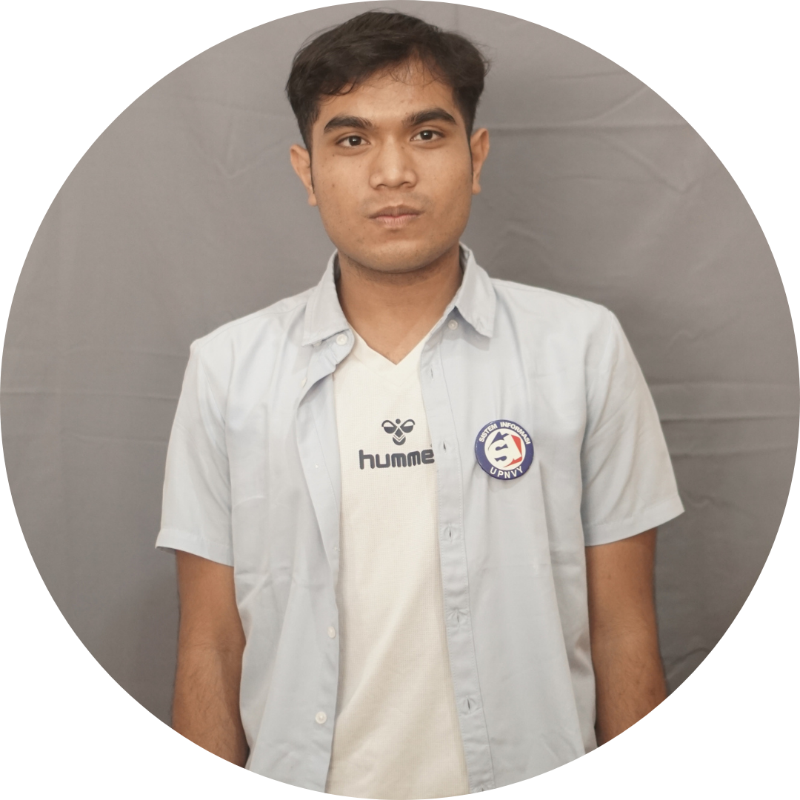

Lahir pada tahun 2006, saya merupakan individu yang aktif dan memiliki beragam minat serta pengalaman di berbagai bidang. Saat ini, saya sedang menempuh pendidikan di Universitas Pembangunan Nasional Veteran Yogyakarta, Fakultas Teknik Industri, Program Studi Sistem Informasi. Selama masa perkuliahan, saya kerap terlibat dalam berbagai kegiatan kepanitiaan dan organisasi, serta aktif mengikuti berbagai perlombaan sebagai bentuk pengembangan diri dan peningkatan kemampuan. Di sisi lain, saya juga sedang membangun personal branding melalui akun Instagram @adrazr_ dan @lens_project, yang berfokus pada konten kreatif dan storytelling visual. Selain itu, saya turut membantu orang tua dalam mengembangkan usaha kopi Kopi Sedjati, yang bergerak di bidang penjualan kopi bubuk, kopi literan, dan biji kopi, sekaligus merintis bisnis jasa editing foto dan video sebagai
Sejak tahun 2023, saya mengembangkan akun Instagram @adrazr_ sebagai media personal branding, dan pada tahun 2025 mulai membangun @lens_project yang berfokus pada pembahasan film dan series. Dalam prosesnya, beberapa konten yang saya buat berhasil masuk FYP dan meraih jumlah penayangan yang tinggi,
KunjungiSejak tahun 2020, saya aktif mengembangkan kanal YouTube dengan konsistensi mengunggah video setiap minggu. Beberapa konten yang saya buat berhasil memperoleh jumlah penayangan yang cukup tinggi, sekaligus menjadi sarana untuk mengasah kemampuan dalam editing dan produksi video.
KunjungiPada tahun 2026, saya mulai mengaktifkan akun TikTok sebagai media yang lebih santai dan berorientasi hiburan, sebagai penyeimbang dari citra serius yang sering saya tampilkan di platform media sosial lainnya. Meskipun bersifat ringan, akun ini tetap memiliki tujuan strategis sebagai sarana memperluas jangkauan audiens
Kunjungi